컴퓨터응용가공산업기사 (2008-03-02 기출문제)
1과목: 기계가공법 및 안전관리
1. 절삭공구의 구비조건으로 틀린 것은?
- 취성이 클것
- 마찰계수가 작을 것
- 내마모성이 클것
- 고온에서 경도가 감소하지 않을 것
(정답률: 81%)

2. 구성인선(built-up edge)에 대한 일반적인 설명으로 틀린 것은?
- 절삭 저항이 커진다.
- 가공 면을 거칠게 한다.
- 바이트의 수명을 짧게 한다.
- 절삭속도를 작게 하면 방지된다.
(정답률: 72%)
3. 절삭유제의 사용 목적에 대한 일반적인 설명으로 틀린 것은?
- 절삭공구를 냉각시켜 공구의 경도저하를 막는다.
- 칩의 제거를 용이하게 하여 절삭작업을 쉽게 한다.
- 공구의 마모를 줄이고 윤활 및 세척작용으로 가공표면을 좋게 한다.
- 공구와 가공물의 친화력 향상으로 정밀도를 높게 한다.
(정답률: 62%)
4. 터릿 선반(turret lathe)등에 널리 사용되며, 보통 선반에서는 주축의 테이퍼 구멍에 슬리브를 꽂은 다음 여기에 끼워 사용하는 것은?
- 연동척
- 마그네틱척
- 콜릿척
- 단동척
(정답률: 65%)
5. 다음 중 선반 베드의 재질로 가장 적합한 것은?
- 고급 주철
- 탄소 공구강
- 연강
- 초경합금
(정답률: 55%)
6. 수평 밀링 머신의 주축(spindle)에 대한 설명 중 틀린 것은?
- 보통 테이퍼 롤러 베어링으로 지지되어 있다.
- 기둥(column)에 설치되어 있으며 아버를 고정한다.
- 주축 끝에 코터가 장치되어 있어 커터의 중심을 맞춘다.
- 주축단은 보통 테이퍼진 구멍으로 되어 있으며 크기는 규격으로 정해져 있다.
(정답률: 25%)
7. 암나사를 가공하는 탭(tap)을 사용하여 가공할 때 일반적으로 최종 다듬질에 사용하는 것은?
- 3번 탭
- 2번 탭
- 1번 탭
- 0번 탭
(정답률: 78%)
8. 다음 중 작업자의 복장으로서 적당하지 않은 것은?
- 기름이 밴 작업복은 입지 않는다.
- 수건은 허리춤에 곡 맞게 끼거나 목에 감는다.
- 작업복의 소매와 바지의 단추를 잠근다.
- 상의의 옷자락이 밖으로 나오지 않도록 한다.
(정답률: 84%)
9. 한계 게이지 측정방식의 특징 중 잘못된 것은?
- 개인차가 없고 측정 시간이 절약된다.
- 경험이 필요치 않다.
- 측정이 쉽고 대량 생산에 적합하다.
- 눈금이 없어 측정 실패율이 높다.
(정답률: 70%)
10. 밀링에서 상향절삭과 비교한 하향절삭 작업의 장점에 대한 설명이다. 틀린 것은?
- 공구의 수명이 길다.
- 가공물 고정이 유리하다.
- 앞으로 가공할 면을 잘 볼 수 있어서 좋다.
- 백 래시를 제거하지 않아도 된다.
(정답률: 77%)
11. 셰이퍼에서 램의 왕복 속도는 어떠한가?
- 일정하다.
- 귀환 행정일 때가 늦다.
- 절삭 행정일 때가 빠르다.
- 귀환 행정일 때가 빠르다.
(정답률: 59%)
12. 일감에 회전운동과 이송을 주며, 숫돌을 일감표면에 약한 압력으로 눌러 대고 다듬질할 면에 따라 매우 작고 빠른 진동을 주어 가공하는 방법은?
- 슈퍼피니싱
- 래핑
- 드릴링
- 드레싱
(정답률: 78%)
13. 호빙머신에서 호브의 절삭속도를 v(m/min), 호브의 바깥지름을 d(mm)라 하면, 호브의 회전수 n(rpm)을 나타내는 식은?
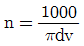
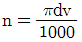
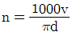
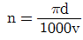
(정답률: 79%)
14. CNC장치의 일반적인 정보 흐름으로 옳은 것은?
- NC명령 → 제어장치 → 서보기구 → NC가공
- 서보기구 → NC명령 → 제어장치 → NC가공
- 제어장치 → NC명령 → 서보기구 → NC가공
- 서보기구 → 제어장치 → NC명령 → NC가공
(정답률: 49%)
15. 드릴작업할 때 절삭속도 25m/min, 드릴지름 22mm, 이송0.1mm/rev, 드릴 끝의 원추높이가 6mm일 경우 깊이 100mm인 구멍을 뚫는 때 소요시간은 약 몇 분인가?
- 8.76
- 6.43
- 4.72
- 2.93
(정답률: 31%)
16. 연삭 중 어느 정도 숫돌입자가 마열되면 결합제의 결합도가 저항에 견디지 못하고 숫돌에서 탈락하여 새로운 날로 바뀌는 것이 숫돌의 특징이다. 이러한 현상을 무엇이라고 하는가?
- 로딩
- 트루잉
- 자생작용
- 글레이징
(정답률: 55%)
17. 그림과 같은 사인바의 H값을 구하는 공식은?
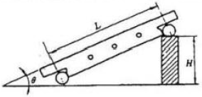
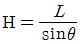
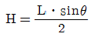
- H=Lㆍsinθ
- H=2(Lㆍsinθ)
(정답률: 34%)
18. 다음 중 영국식 선반 베드의 단면 형상은?
- 산형
- 평형
- 절충형
- 별형
(정답률: 61%)
19. 연삭 작업에서 연삭 숫돌의 입자가 무디어 지거나 눈 메움이 생기면 연삭 능력이 저하되므로 숫돌의 예리한 날이 나타나도록 가공하는 작업을 무엇이라 하는가?
- 시닝
- 드레싱
- 글레이징
- 로딩
(정답률: 59%)
20. 다음 중 금긋기 작업 공구로 가장 거리가 먼 것은?
- 서피스게이지
- 콤파스
- V 블록
- 광선정반
(정답률: 48%)
2과목: 기계설계 및 기계재료
21. 다음 희주철에 대한 설명 중 틀린 것은?
- 인장력에 약하고 깨지기 쉽다.
- 탄소강에 비해 진동에너지의 흡수가 되지 않는다.
- 주조와 절삭가공이 쉽다.
- 유동성이 좋아 복잡한 형태의 주물을 만들 수 있다.
(정답률: 41%)
22. 철공용 줄(file)의 재질로 가장 적합한 것은?
- 고속도강
- 탄소공구강
- 세라믹
- 연강
(정답률: 55%)
23. 다음 중 절삭 공구용 특수강은?
- Ni-Cr 강
- 불변강
- 내열강
- 고속도강
(정답률: 76%)
24. 탄소강에서 적열취성의 원인이 되는 원소는?
- 규소
- 망간
- 인
- 황
(정답률: 51%)
25. 열간가공과 비교하여 냉간가공의 장점은 무엇인가?
- 작업능률이 양호하다.
- 가공에 필요한 동력이 적게 소모된다.
- 제품 표면이 아름답다.
- 단시간 내 완성이 가능하다.
(정답률: 40%)
26. 비중이 1.74 정도 이며, 가벼워 항공기 및 자동차 부품 등에 사용되는 합금의 재료는?
- Sn
- Cu
- Mg
- Ni
(정답률: 62%)
27. 순철(α철)의 격자구조는?
- 면심입방격자
- 연심정방격자
- 체심입방격자
- 조밀육방격자
(정답률: 50%)
28. 탄소가 0.25%인 탄소강의 기계적 성질을 0~500℃ 사이에서 조사하면 200~300℃에서 인장강도가 최대치를, 연신율이 최저치를 나타내며 가장 취약하게 되는 현상은?
- 고온취성
- 상온 충격치
- 청열취성
- 탄소강 충격값
(정답률: 70%)
29. 가공용 알루미늄합금 중 항공기나 자동차 음체용 고강도 Al-Cu-Mg-Mn계의 합금은?
- 두랄루민
- 하이드로날륨
- 라우탈
- 실루민
(정답률: 75%)
30. 다음 중 주철의 흑연발생 촉진 원소는 어느 것인가?
- Si
- Mn
- P
- S
(정답률: 36%)
31. 다음 중 표준스퍼 기어에서 이의 크기가 가장 큰 것은? (단, m : 모듈, P : 지름피치 이다.)
- P = 10
- P = 12
- m = 2
- m = 2.5
(정답률: 23%)
32. 사각형 단면(100mm×60mm)의 기둥에 10kgf/cm2압축응력이 발생할 때 압축하중은 약 얼마인가?
- 6000kgf
- 600kgf
- 60kgf
- 60000kgf
(정답률: 47%)
33. 반복하중을 받는 스프링에서는 그 반복속도가 스프링의 고유진동수에 가까워 지면 심한 진동을 일으켜 스프링의 파손 원인이 된다. 이 현상을 무엇이라 하는가?
- 자유높이
- 스프링상수
- 비틀림모멘트
- 서징
(정답률: 46%)
34. 축의 홈이 깊게 파여 축의 강도가 약하게 되기는 하나 키와 키홈 등이 모두 가공하기 쉽고 키가 자동적으로 축과 보스 사이에 자리를 잡을 수 잇어 자동차, 공작기계 등의 축에 널리 사용되며 특히 테이퍼 축에 사용하면 편리한 키는?
- 둥근 키
- 접선 키
- 묻힘 키
- 반달 키
(정답률: 35%)
35. 다음 그림과 같은 원통코일 스프링의 처짐량 δ=60mm일 때, 작용하는 하중 W는 몇 kgf인가? (단, 스프링 상수 k1=6kgf/cm. k2=2kgf/cm이다.)
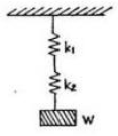
- 4kgf
- 6kgf
- 9kgf
- 48kgf
(정답률: 35%)
36. V벨트를 평벨트와 비교한 특징이다. 틀린 것은?
- 전동효율이 좋다.
- 축간거리를 더 멀리 할 수 있다.
- 고속운전이 가능하다.
- 정숙한 운전이 가능하다.
(정답률: 68%)
37. 재료에 높은 온도로 큰 하중을 일정하게 작용시키면 응력이 일정해도 시간의 경과에 따라 변형률이 증가하는 현상은?
- 크리프현상
- 시효현상
- 응력집중현상
- 피로파손현상
(정답률: 54%)
38. 3줄 나사에서 나사를 3회전 하였더니 36mm 전진하였다. 이 나사의 피치는?
- 12mm
- 6mm
- 4mm
- 3mm
(정답률: 63%)
39. 축을 설계할 때 고려해야 할 사항이 아닌 것은?
- 강도 및 변형
- 진동
- 회전방향
- 얼응력
(정답률: 48%)
40. 역류를 방지하여 유체를 한쪽 방향으로만 흘러가게 하는 밸브는 무슨 밸브라 하는가?
- 콕밸브
- 체크밸브
- 게이트밸브
- 안전밸브
(정답률: 74%)
3과목: 컴퓨터응용가공
41. CAD/CAM 시스템에서 컵이나 병 등의 형상을 만들 때 회전곡면(revolution surface)을 이용한다. revolution작업시 필요한 자료가 아닌 것은?
- 회전각도
- 회전중심축
- 회전단면선
- 옵셋(offset)량
(정답률: 62%)
42. 4면체 와이어프레임 모델(wireframe model)로 표현하였을 때 모서리(edges) 개수는 몇 개인가?
- 6
- 5
- 4
- 3
(정답률: 42%)
43. 와이어프레임 모델의 일반적인 특징 설명으로 틀린 것은?
- 온선제거가 가능하다.
- 처리속도가 빠르다.
- 단면도 작성이 어렵다.
- 데이터의 구성이 간단하다.
(정답률: 72%)
44. 베지어(Bezier)곡선의 특징을 설명한 것 중 틀린 것은?
- 곡선은 조정점(control point)에 의해 형성된 블록포(convex hull)의 바깥쪽에 위치할 수 있다.
- 곡선은 양끝점의 조정점을 통과한다.
- 1개의 조정점 변화는 곡선 전체에 영향을 미친다.
- n개의 조정점에 의하여 정의되는 곡선은(n-1)차 곡선이다.
(정답률: 50%)
45. 와이어프레임 모델과 비교하여 솔리드 모델(Solid model)에 관한 설명 중 틀린 것은?
- 체적에 관한 물리적 특성 계산이 가능하다.
- 일반적으로 메모리 요구량이 많아진다.
- 정확한 형상표현이 가능하다.
- 온선 제거 및 간섭 체크가 곤란하다.
(정답률: 68%)
46. 자유곡면을 형성할 때 곡면 패치(patch)의 4개 점의 위치 벡터와 4개의 경계곡선을 정의하고, 그 경계조건을 보간하여 곡면을 생성시키는 것은?
- NURBS 곡면
- Coons 곡면
- Spline 곡면
- Ferguson 곡면
(정답률: 69%)
47. 항공기 날개나 동체, 자동차 차체, 배의 동체 등에는 기능상으로 매우 복잡한 형상이 표현되어야 하기 때문에 다양한 곡면의 표현 방법이 요구되고 있다. 다음 중 모델링 방법에 따른 곡면의 설명 중 틀린 것은?
- Loft 곡면 : 여러 개의 단면곡선을 연결 규칙에 따라 연결한 곡면
- Grid 곡면 : 삼차원 측정기 등에서 얻은 점을 근사적으로 연결하는 곡면
- Blending 곡면 : 두 곡면이 만나는 부분을 부드럽게 만들 때 생성되는 곡면
- Patch 곡면 : 경계곡선의 외부를 형성하는 곡면
(정답률: 35%)
48. 아래에서 공구간섭(overcut, undercut)에 대하여 틀리게 설명한 것은?
- 볼록한 모양을 가공할 시에는 별로 문제되지 않는다.
- Overcut을 방지하려면 사용하는 공구의 반경이 곡면의 최소 곡률 반경보다 커야 한다.
- Undercut을 방지하려면 사용하는 공구의 반경이 곡면의 최소 곡률 반경보다 작아야 한다.
- 여러 개의 곡면이 모여 복합곡면을 이루면 공구간섭을 체계적으로 해결하기가 힘들다.
(정답률: 30%)
49. 다음 모델 중 FEM과 같은 공학적인 해석에 적합한 모델은?
- 와이어프레임 모델
- 서피스 모델
- 솔리드 모델
- 경계(boundary)모델
(정답률: 71%)
50. 일반적인 CAD 시스템에서 직선을 정의하는 방법이 아닌 것은?
- 임의의 2점을 지정
- 임의의 한 점과 중분 좌표값 입력
- 곡선의 중심점
- 임의의 원에 위치한 한 점에서의 접선
(정답률: 56%)
51. DNC 시스템의 물리적 구성요소라고 할 수 없는 것은?
- CNC기계
- 데이터 전송장치(통신선)
- 중앙컴퓨터
- CL 데이터
(정답률: 63%)
52. 공구의 경로(CL data)를 입력받아 특정의 CNC공작기계에 맞는 CNC프로그램을 생성해내는 도구는?
- 산술계산기(arithmetic calculator)
- 포스트 프로세서(post processor)
- 번역기(translation unit)
- 테이프 판독기(tape reader)
(정답률: 80%)
53. 이종 CAD 시스템간의 제품 데이터 교환에 사용하는 중립 데이터 형식이 아닌 것은?
- IGES
- DXF
- STEP
- KSSM
(정답률: 71%)
54. 그래픽 입력장치가 아닌 것은 어느 것인가?
- 라이트 펜(light pen)
- 디지타이저(Digitizer)
- 플로터(plotter)
- 조이스틱(Joy stick)
(정답률: 74%)
55. 3차원 CAD 데이터를 이용하여 원하는 실물모형(mock-up)을 제작하는 것은?
- Ivertment Casting
- Rapid Prototyping
- Slurry Casting
- Reverse Engineering
(정답률: 50%)
56. 다음은 2차원에서 구성되는 원추곡선의 가장 일반적인 식이다. 이 일반식으로 표현되지 않는 형상은? ax2+bxy+cy2+dx+ey+g=0 (여기서 a,b,c,d,e,g 는 상수이다.)
- Ellipse(타원)
- Parabola(포물선)
- Hyperbola(쌍곡선)
- Hexagon(육각형)
(정답률: 47%)
57. 2차원 상의 한점 P=[x, y, 1]을 x축 방향으로 전단 변환(shearing)하는 3×3 동차 변환 행렬[T]은? (여기서 a는 상수)
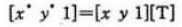
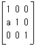
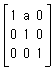
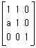
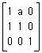
(정답률: 30%)
58. 다음의 기하학적 변환 중에서 변환 전의 거리와 비교할 때 변환이 수행된 후에 물체상에 위치한 특정 두 점간의 거리가 달라질 수 있는 변환은?
- 이동 변환(translation)
- 회전 변환(rotation)
- 크기 변환(scaling)
- 반사 변환(reflection)
(정답률: 53%)
59. 그림과 같이 제품형상을 구성할 때 기초 형상(primitives)들을 조합하는 방식으로 3차원 형상을 구성하는 방식에 해당하는 모델은?
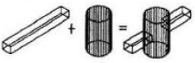
- B-rap 모델
- Cell decomposition 모델
- surface 모델
- CSG 모델
(정답률: 54%)
60. 은선 제거법에서 면 위의 점에서 법선벡터를 N, 면 위의 점으로부터 관찰자 눈으로 향하는 벡터를 M이라고 할 때, 관찰자의 눈에 보이지 않는 면에 대한 표현으로 알맞은 것은?
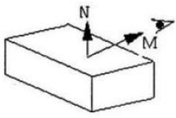
- MㆍN ＞ 0
- MㆍN＜ 0
- MㆍN = 0
- M = N
(정답률: 59%)
4과목: 기계제도 및 CNC공작법
61. 도면 내에 참고 치수를 나타내려고 한다. 올바른 설명은?
- 치수에 괄호를 한다.
- 치수앞에 @표를 한다.
- 치수를 ○ 안에 표시한다.
- 치수 위에 ※ 표를 한다.
(정답률: 73%)
62. 다음 중에서 온 단면도로 나타낸 것은?
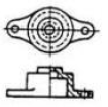
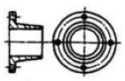
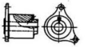
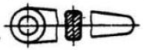
(정답률: 49%)
63. 구멍의 치수가
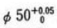
, 축의 치수가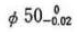
일 때, 최대 틈새는 얼마인가?- 0.02
- 0.03
- 0.⑤
- 0.07
(정답률: 76%)
64. 다음 표면의 결 도시기호에서 X는 무엇을 나타내는가?
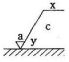
- 가공방법의 약호
- 가공모양의 기호
- 표면거칠기의 상한치
- a에 대한 기준길이
(정답률: 72%)
65. 도면에서 가는 실선으로 표시된 대각선 부분의 의미는?
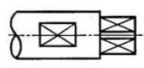
- 홈부분
- 곡면
- 평면
- 라운드 부분
(정답률: 75%)
66. 다음 재료 중 기계 구조용 탄소 강재인 것은?
- SS 400
- SCr 410
- SM 40C
- SCS 55
(정답률: 63%)
67. 다음 도면에서 평면도로 가장 적합한 것은?
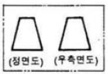
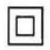
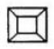
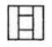
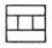
(정답률: 71%)
68. 다음 그림에서 13-ø20에서 13이 나타내는 것은?
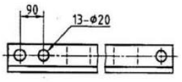
- 구멍의 전체 수량
- 구멍의 크기
- 구멍의 간격
- 구멍의 등급
(정답률: 76%)
69. 나사의 도시에서 수나사와 암나사의 골지름은 어떤 선으로 그리는가?
- 굵은실선
- 가는실선
- 파선
- 일점쇄선
(정답률: 50%)
70. 관련형체에 적용하는 데이텅이 필요한 기하공차의 종류인 것은?
- 진직도
- 원통도
- 평면도
- 원주 흔들림
(정답률: 60%)
71. 다음 CNC의 제어 방식 중에서 여러 축의 움직임을 동시에 제어할 수 있기 때문에 2차원 또는 3차원 이상의 제어에 사용되는 것은?
- 윤곽절삭 제어방식
- 직선절삭 제어방식
- 위치결정 제어방식
- 절대좌표 제어방식
(정답률: 48%)
72. CNC선반 프로그램에 G96 S100 M03 ; 일 때 S100은 어떠한 의미를 나타내는가?
- 절삭속도 100m/min로 주축속도 일정제어
- 매분 이송 100mm/min
- 매회전 이송 100mm/rev
- 회전수 100rpm으로 주축회전수 일정제어
(정답률: 60%)
73. CNC선반에서 절삭동력이 1.8kW이고, 주축의 회전수가 800rpm일 때 ø60mm가공시 주분력은 약 몇 N인가?
- 717
- 736
- 756
- 775
(정답률: 18%)
74. CMC선반에서 공구보정(offset)번호 4번을 선택하여, 2번 공구를 사용하려고 할 때 공구지령으로 옳은 것은?
- T0204
- T0402
- T2040
- T4020
(정답률: 73%)
75. 다음 CNC선반 프로그램에서 N70 블록에서의 주축 회전수는 몇 rpm인가?
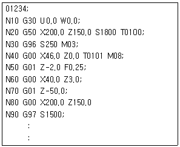
- 250
- 1500
- 1800
- 1990
(정답률: 45%)
76. 머시닝센터의 공구보정과 해당 G코드가 잘못 연결된 것은?
- G40 - 공구 지름 보정 취소
- G42 - 공구 지름 우측 보정
- G43 - 공구 길이 보정 “+”
- G49 - 공구 길이 보정 “-”
(정답률: 66%)
77. CNC 공작기계의 운전시 유의사항 중 옳지 않은 것은?
- 작업시 안전을 위해 장갑을 낀다.
- 절삭가공 전 반드시 프로그램을 확인한다.
- 공작물의 고정에 유의한다.
- 공구경로에 유의한다.
(정답률: 80%)
78. CNC 공작기계에서 백래시를 줄이고 운동저항을 적게 하기 위해 사용되는 요소는?
- 볼스크루
- 리졸버
- 서보모터
- 컨트롤러
(정답률: 70%)
79. 머시닝센터에서 공작물을 자동으로 교환하는 장치는?
- APC
- APT
- ATC
- ABS
(정답률: 34%)
80. 다음 중 머시닝센터에 사용되는 고정 사이클 취소를 나타내는 준비 기능은?
- G80
- G85
- G86
- G89
(정답률: 64%)